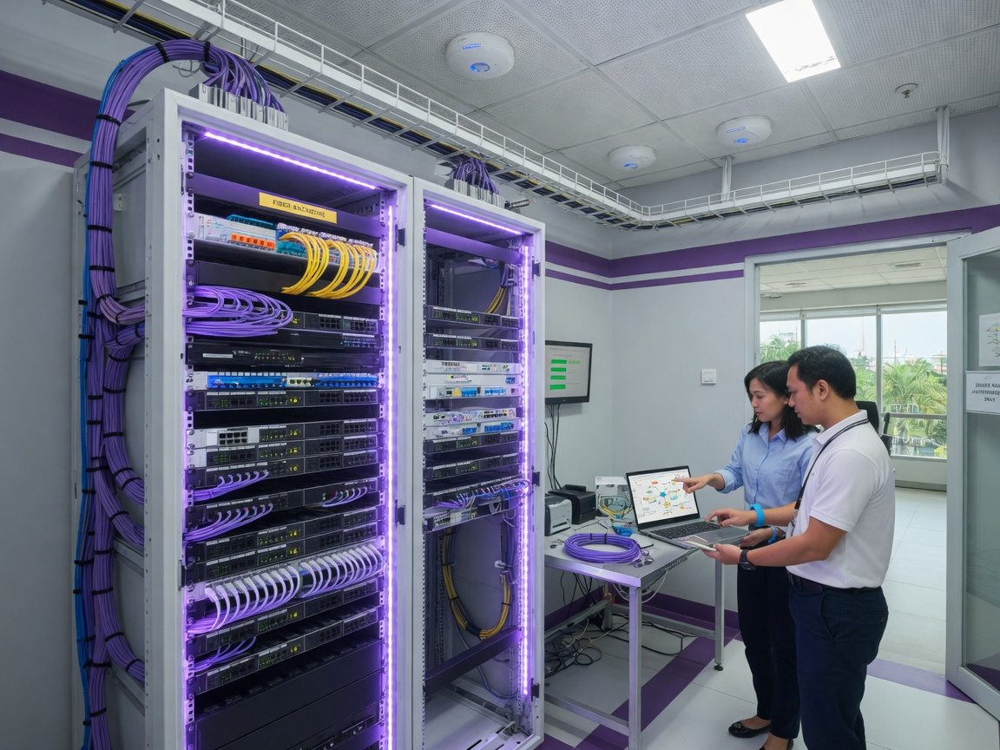

Perancangan, instalasi, dan pengelolaan infrastruktur jaringan yang stabil, aman, dan scalable — dari kabel structured cabling hingga WiFi enterprise dan fiber optic.
Jaringan adalah tulang punggung operasional bisnis modern. Tanpa infrastruktur yang baik, produktivitas menurun, komunikasi terganggu, dan data rentan terhadap ancaman keamanan.
Creative Network merancang dan membangun jaringan sesuai kebutuhan — dari kantor kecil 10 pengguna hingga gedung multi-lantai dengan ratusan perangkat. Kami menggunakan standar industri dan perangkat terpercaya.
Kebutuhan jaringan kantor dengan internet stabil dan WiFi luas.
Jaringan industrial, CCTV integration, dan coverage area luas.
Infrastruktur jaringan untuk lab komputer, admin, dan guru.
Analisis lokasi, kebutuhan bandwidth, titik akses, dan estimasi biaya.
Topologi jaringan, IP addressing scheme, dan network diagram.
Server rack, cable tray, labeling, dan tata kabel rapi standar industri.
Konfigurasi MikroTik, Cisco, Aruba, Allied Telesis, Ubiquiti, Sophos, FortiGate, dan lainnya.
Indoor/outdoor AP, mesh network, dan load balancing.
Akses aman ke jaringan kantor dari luar untuk WFH.
QoS, traffic shaping, dan prioritas aplikasi bisnis kritis.
Speed test, ping test, stress test, dan serah terima dokumentasi.
Setiap proyek unik — kami sesuaikan dengan skala dan kebutuhan Anda.
Kantor kecil 1–2 lantai, hingga 20 titik jaringan.
Kantor menengah 2–5 lantai, 20–80 titik jaringan.
Gedung besar, multi-site, fiber backbone, 80+ titik.
12 vendor jaringan & media transmisi — filter kategori lalu klik untuk detail.

Pemasangan jaringan untuk laboratorium komputer, ruang kelas TJKT, dan area administrasi sekolah. Koneksi stabil untuk pembelajaran harian, ujian online, dan lomba kompetensi siswa.
Kunjungan lokasi, analisis kebutuhan, dan assessment infrastruktur existing.
Topologi jaringan, bill of material, timeline, dan estimasi investasi.
Pemasangan kabel, rack, perangkat aktif, dan konfigurasi jaringan.
Uji performa, keamanan, dokumentasi, dan pelatihan admin.
Konsultasikan kebutuhan jaringan bisnis Anda — survey lokasi gratis untuk area Kudus.